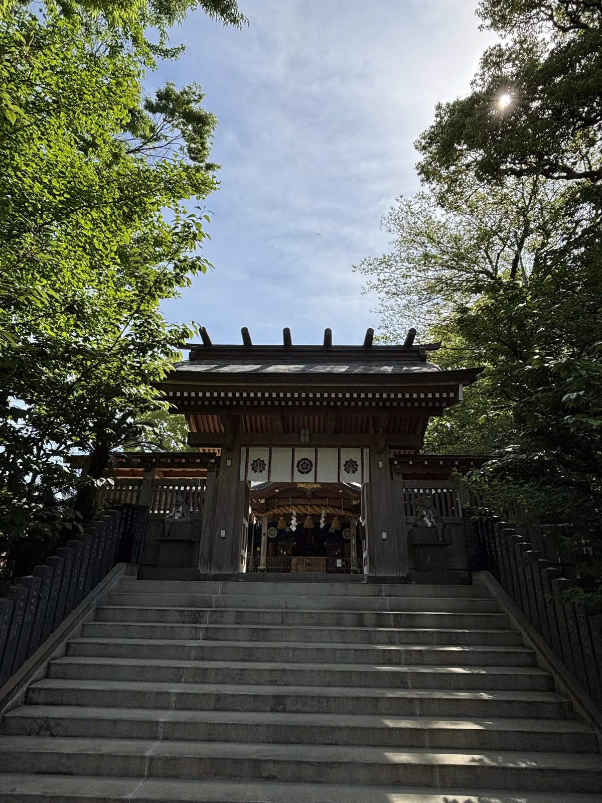
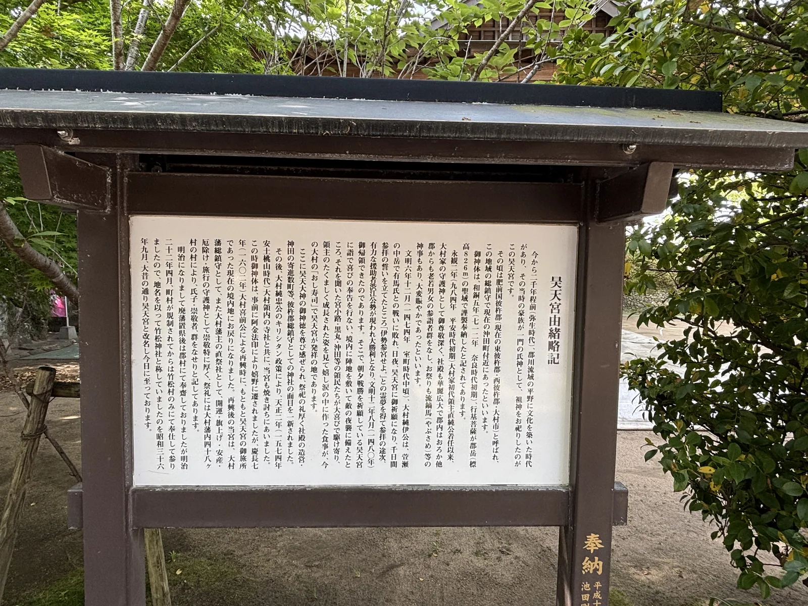
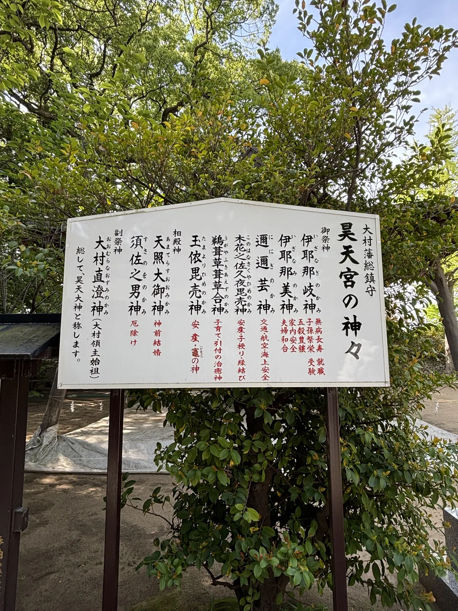
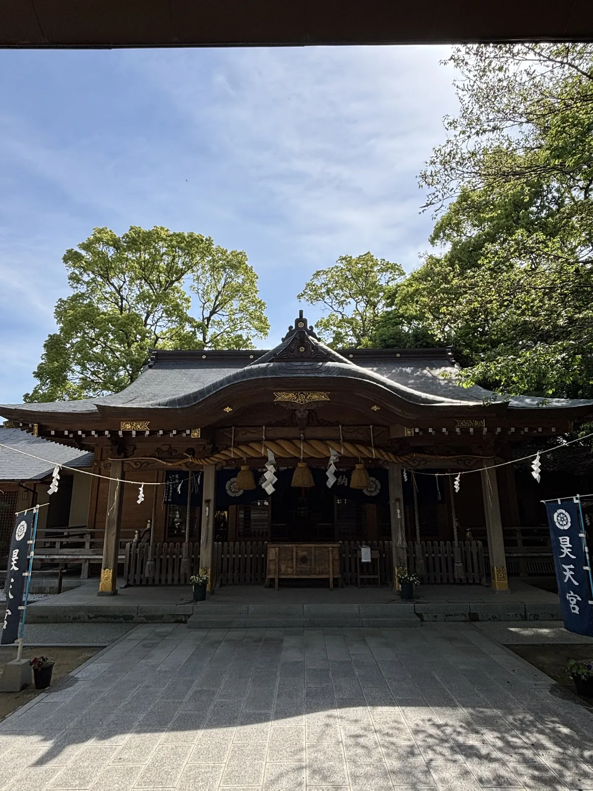
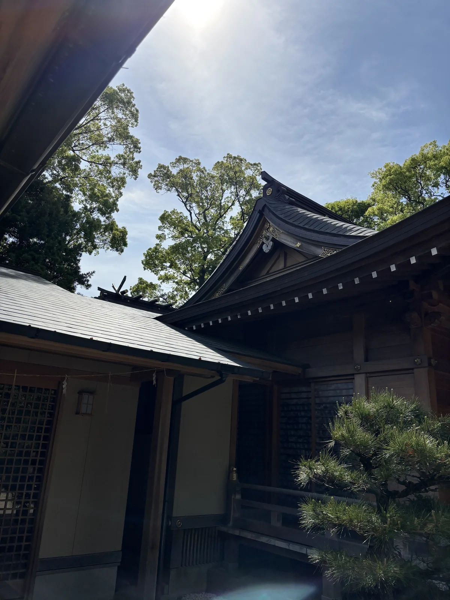
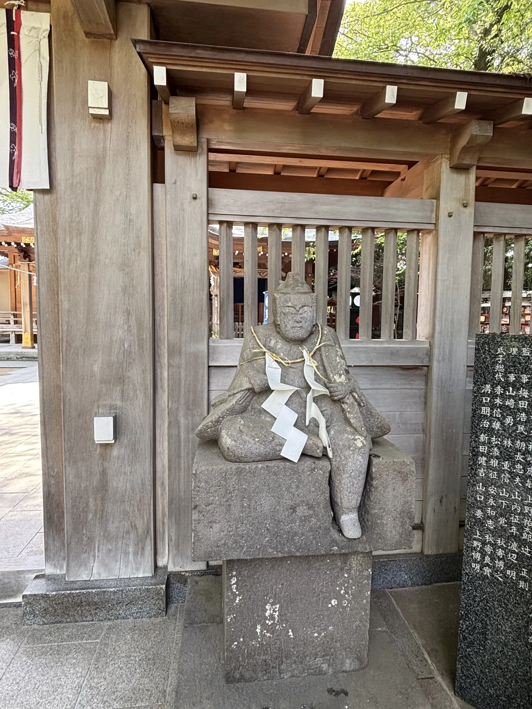
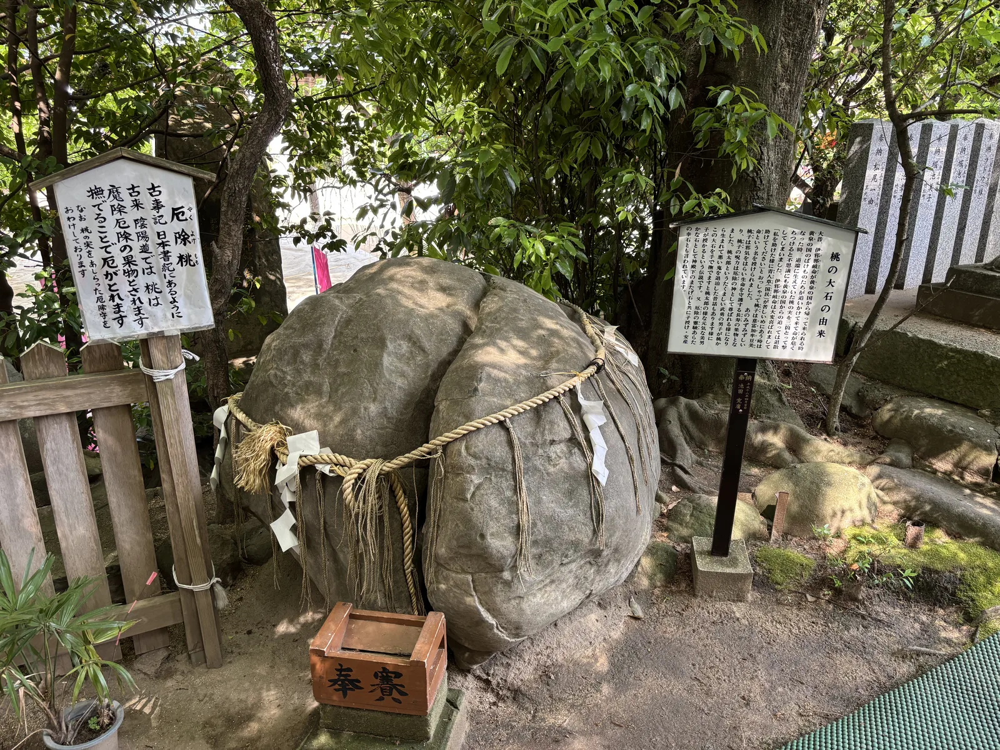
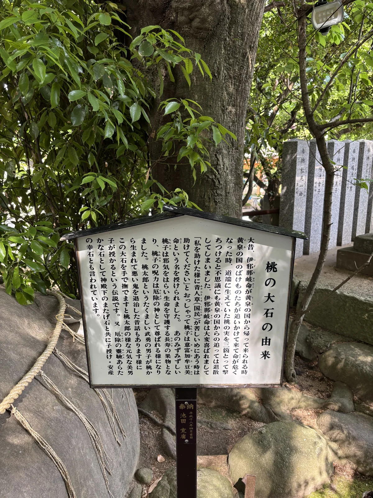

⛩ 神社寺廟散策 · 長崎縣・大村市宮小路 · 2025-04
昊天宮
昊天宮こうてんぐう
- 祭神
- 本殿六座 伊邪那岐神・伊邪那美神・瓊瓊杵神・木花咲耶姬神・鵜葺草葺不合神・玉依姬神｜相殿 天照皇大神・素戔嗚神｜副祭 大村遠江守藤原直澄神
- 社格
- 大村藩總鎮守｜舊肥前國彼杵郡總鎮守
從昊天宮的石階下往北，是一條筆直的國道。走十分鐘會到一座二〇二二年才啟用的車站， 站名叫大村車輛基地——新幹線的車庫就蓋在那裡。再往北五百公尺是沖田町， 神社的由緒板說，兩千年前它本來在那一帶。再往前是郡川， 順著堤防往西北的下游走，接到黑丸町，再折向海側那條叫 サンセット通り（Sunset Street，落日通）的縣道繞回來，全程四點六公里的平地。
我在境內只待了三分鐘。那三分鐘裡拍到的四塊看板， 把這座神社兩千年份的說法全寫在上面了。

創祀年代不可考之認定
昊天宮的由緒板第一句話是「今から二千年程前（弥生時代）」。兩千年前， 郡川流域的平野上有人建立了文化，當時的豪族把一門的氏神、也就是自己的祖神祀在這裡。 但官方網站在同一段敘述的後面補了一句，把那個說法的地基掀掉了—— 「御縁起並に伝書等天正二年焼失により御代草創が明らかでない」： 緣起和傳書都在天正二年（1574）燒掉了，所以創建於何時並不清楚。
放火的人是這片土地的領主。大村純忠推行キリシタン（Kirishitan，天主教徒）政策， 那一年大村領內的寺社連同這座宮一起被燒。 神社在自己的由緒裡直接寫出這件事，沒有繞開，也沒有把責任推給別人； 一座宮把「我為什麼說不清自己幾歲」的原因，寫成由緒的一部分。
御神體逃過了。由緒板寫，火燒之前阿金法印已經先把御神體遷到嬉野， 直到慶長七年（1602）大村喜前重興時才回來，而回來的地點不是原來的社地， 是這裡——原本是昊天宮自己的御旅所。祭典時神明暫歇的地方， 在正社燒掉之後變成了正社。
至於御神體本身的來歷，由緒板寫的是和銅五年（712）， 行基菩薩在郡岳的聖域謹製奉納。一座說不出自己何時創建的神社， 卻能說出御神體是誰在哪一年、在哪座山上做的—— 記不住的是文件，記得住的是那塊東西從哪裡來。
社名的解釋也有兩個版本，而且都是官方的。官網說「昊天」是守護宇宙與大空的天津神， 三千年前的古書把鳳凰起飛的那一天稱作昊天，其神格是太陽神； 由緒板則說是大村純伊奪回領地歸來之後，取「蒙受幸運」之意改稱幸天。 一個講宇宙，一個講一場勝仗，兩個版本並列在同一座神社的官方文本裡。


立地非屬偶然
這一帶的地名裡有一個字反覆出現：郡川、郡岳、郡村、彼杵郡。 「郡」在這裡不只是行政區劃的通名，也是實際的地名， 而昊天宮的舊社格寫的正是肥前國彼杵郡總鎮守——管的就是這個郡。 神社站在山與平野交界的那道坎上，背後的東側是山，前面是平野。 從境內往北走，地面一路往下——先是六百公尺外的大村車輛基地，再往北是沖田町的郡川河岸。
平野從神社這裡朝西北的郡川與大村灣一路緩降，山地在背後的東側， 而御神體的出處在更東邊。郡岳標高八百二十六公尺， 從神社量過去是東北東方向約七點五公里， 由緒板說行基就是在那座山的聖域上把御神體做出來的。 做神體的山在東，祀神體的社在西，中間隔著一整片平野。
支持「兩千年前」那句話的東西，就埋在正北六百公尺。 長崎縣教育委員會為了九州新幹線西九州路線的車輛基地與路線工程， 在二〇一三到二〇一四年發掘了竹松遺跡，所在地是大村市竹松町一〇二一番地一帶。 報告書著錄的年代是繩文早期、彌生後期、古墳、古代到中世； 遺構有石棺墓、土坑、竪穴建物跡與掘立柱建物跡。
出土物的清單裡有舶載鏡、仿製鏡、玻璃玉與勾玉。也就是說， 神社說兩千年前有豪族在這片平野上建立了文化， 縣教委的鏟子在同一片平野上挖出了鏡與玉—— 兩邊講的不是同一件事，但講的是同一塊地。
現在壓在遺跡上面的是新幹線的車庫。發掘結束就回填，地表看不到任何東西， 二〇二二年那座叫「大村車輛基地」的車站蓋在旁邊。 神社的兩千年、縣教委的彌生後期、新幹線的車庫，疊在同一個座標上， 只是三者分別存在於文本、報告書與時刻表裡。
神社正前方的國道三十四號，把大村的南北串成一條。 往南約四點九公里是設有本陣的大村宿，也就是現在的本町商店街； 神社門前那個路口的正式名稱，就叫「昊天宮前」—— 一座神社的名字，變成了國道上的一個地點。
參道形制及其空間效果
石階很寬，寬到不像一座地方神社該有的規模。上到頂端是神門， 切妻的屋頂上橫排五根鰹木，白壁上嵌著三個神紋，兩側接出透塀， 把整片社殿圍成一個內院。穿過神門，拜殿正對著你， 屋頂是入母屋，向拜上方拉出一道很大的軒唐破風。
破風下方與蟇股都貼了金；正面垂著一條粗注連繩，底下綁著四束稻藁與紙垂， 藍色的幕上印著神紋，兩側各立一面寫著「昊天宮」的藍幟。 繞到側後方，屋頂的層次才看得清楚：幣殿與本殿的破風上掛著懸魚， 妻飾與破風端也都上了金，左側另一棟較低的屋頂上， 交叉的千木與橫排的鰹木露在樹梢之間。
木頭全是新的。官方網站寫得清楚：平成二十四年十月（2012）， 氏子崇敬者出資完成「平成御造營」，御本殿以下的建物落成， 「古代以来再び大社の威容を拝するに至る」。 從石階下往上看的那個氣派，是二〇一二年才恢復的。
所以境內最老的東西不是任何一棟建築。神門兩側那兩尊石造隨神像， 官網記的是江戶時代享保十六年（1731），因為神威治好了病， 由郡村的居民全體奉獻——不是某位大名，也不是某個講（kō，同信仰者組成的團體），是整個村。 一座村子集體出資的還願，變成兩尊石頭坐在門邊。
它們現在的樣子是坐著的，頸上掛著注連繩與紙垂，手裡的東西已經看不出來， 臉被三百年的風雨磨得只剩輪廓。官網說， 求厄除、魔除、病氣平癒的人會一邊撫摸這尊像一邊祈禱—— 所以磨掉那張臉的不只是風雨，還有手。
一座剛落成十三年的社殿，和一尊被摸了三百年的石頭，放在同一個院子裡。



竹松神社的七十二年
再興之後的昊天宮，由緒板寫它是大村藩總鎮守，也是藩主的直祭社， 祭禮時「大村藩內四十八ヶ村」的人各自前來，氏子與崇敬者群聚成堆。 四十八個村，是這座神社影響範圍最大的時候。 然後那個範圍開始縮：廢藩置縣之後改由郡村奉齋， 明治二十二年四月（1889）町村制施行，剩下竹松村一村來奉仕。
於是社名跟著地名改了。它被稱作竹松神社，一直到昭和三十六年九月（1961）， 才「大昔の通り」改回昊天宮。從一村奉仕到改回舊名，中間隔了七十二年—— 一座神社的名字，替它記下了氏子區域縮到只剩一個村的那段時間。 名字換回來了，四十八村沒有換回來。
那四十八村裡有三個村的名字，被寫進了另一件事。由緒板說， 文明十二年（1480）大村純伊奪回領地歸來時， 宮小路、黑丸、沖田的領民聞訊趕來，在喜極而泣之中做了一頓飯給他吃。 那頓飯，由緒板寫是「今の大村の『おし寿司』」， 而且直接寫下一句：昊天宮が発祥の地であります。
大村壽司是長崎縣的鄉土料理，而大村市的官方頁面講同一件事，細節更多。 文明六年（1474）大村氏十六代純伊在中岳與島原有馬勢兩千人的大軍交戰失利， 逃到唐津外海的加加良島；六年後得澀江公勢等人的援軍，奪回大村領。 領民迎接領主與將兵，臨時湊不出足夠的食器， 就把剛炊好的飯攤在もろぶた（morobuta，木製的長方形淺箱）上。
上面鋪魚的切片與切碎的蔬菜壓實，將兵用脇差切成方塊、用手抓著吃—— 市府的版本裡沒有出現昊天宮。同一件事，市府記的是食器與吃法， 神社記的是地點，把「在哪裡發生的」寫進自己的由緒板。 兩份文本都在講一頓飯，但只有一份文本把那頓飯釘在自己的境內。
今天這座神社與街區的關係，最實在的一項寫在官網的選單列上：昊天宮保育園。 四十八村的祭禮縮成一個村的名字，一個村的名字又縮成一間托兒所； 只是托兒所每天早上都有人來，而四十八村的祭禮一年一次。 神社的社群不會消失，它只是換了名目繼續存在。
祭儀與授与品
主な祭典
- おくんち祭・神幸祭（10月18日）── 舊曆九月九日的祭禮，因此稱作おくんち。
官方網站寫，神幸祭時宮神輿與五百餘名氏子的供奉列一同巡幸。
- 鬼火焚神事（1月7日）── 焚燒門松與注連飾送走神明；官網寫「鬼火で温まると1年間無病息災で過ごせる」。
- 節分祭（2月3日）── 在境內的特設舞台上撒豆。
- 祇園祭（7月15日）／夏越祭（7月31日）── 夏越祭鑽茅之輪，祓除半年的罪穢。
桃の大石
境內有一塊人高的岩石，形狀像剖開的桃，腰上繫著注連繩與紙垂， 前面擺著一只木製賽錢箱，旁邊兩塊看板把它的來歷寫完了。 「桃の大石の由来」講的是《古事記》那一段：伊邪那岐命從黃泉逃回來， 被黃泉的鬼追到危急，摘了路邊的三顆桃實擲出去，追兵就退散了。
伊邪那岐命大喜，賜桃子「意富加牟豆美命」之名，並要它日後也去救苦難中的人。 於是桃成了驅邪與守護生命的長壽果物，桃子的咒力被尊為厄除之神。 看板接著寫，撫摸這塊大石可以求得像桃太郎那樣健壯的男孩； 官方網站則補上另一半——合掌祈禱的話，生的是健康的女孩。
授与品
- 厄除守 ── 旁邊那塊「厄除桃」的小看板寫：桃自古在陰陽道被當作魔除厄除的果物，
撫摸即可去厄，「なお 桃の実をあしらった厄除守をおわけしております」。 桃形的厄除守，是這塊石頭的隨身版。
境内の神々
- 古御殿の神 ── 官網寫是昊天大神所宿的石神，親暱稱作古御殿樣，「太古の祈りを伝え」，守護萬物的生成發展。
- 昊天稲荷神社 ── 大村純伊自京都伏見稻荷大社勸請而來。
- 祖靈社 ── 祀氏子祖靈、戰歿者與神道家之靈，每月有祖靈命日祭，春秋兩次祖靈大祭。


晨間路線之擬定及其限制
這條路線是環的，四點六公里，扣掉停留大約一小時十五分， 連境內一起算一個半到一個小時四十五分。全程平地，累積爬升不到三十公尺， 一般運動鞋就夠——石階只有神社境內那一段。從昊天宮出發， 門前就是國道三十四號，路口名叫「昊天宮前」，沿國道往北走十分鐘， 到二〇二二年啟用的大村車輛基地站。這一段有人行道，但緊貼車道，車不少。
車站旁邊就是竹松遺跡的範圍，而地表什麼都沒有。遺跡發掘完就回填， 上面蓋著新幹線的車庫，走過去只能隔著圍籬看見基地與新站。 兩千年前的東西在腳下，這一段是用知道的走，不是用看的走。 再往北五百公尺是沖田町，由緒板寫昊天宮本來在「現在の沖田町付近」， 但現地沒有碑、沒有牌、沒有任何指示——走到那裡是走進一個範圍，不是走到一個點。
過了沖田町就是郡川。順著堤防往西北的下游走一點五公里，視野會突然打開： 右手邊是川，左手邊是水田與住宅，回頭看，剛才那片山會一路往東退。 離開堤防轉進黑丸町，這是由緒板上那三個村的第二個， 從這裡接上サンセット通り，路名取自面對大村灣的落日， 再由住宅區斜切回東邊的國道三十四號，一點七公里回到昊天宮。
選早上有兩個實際的理由。一是國道三十四號在通勤尖峰之前車最少， 那一段緊貼車道的人行道會好走很多；二是這片平野朝西， 早晨的光從背後的山打過來，堤防上看得見山影往西退的過程—— 傍晚走同一條路，光是從大村灣那邊逆著照，山會變成一片剪影。
想走遠一點的話，往南四點九公里是大村宿的本町商店街， 往東南一點三公里是JR大村線的竹松站，往南南東兩點三公里是新幹線的新大村站。 再往北走，這條國道會通到大村宿以北八公里的松原宿。 不過那天我沒有走這條路線，只在境內停了三分鐘就上車， 所以這一整條路是回來以後，對著地圖和四塊看板重新走了一遍的。
同一趟旅行的隔天下午，我在佐賀縣的伊萬里川邊， 看一座神社把樓門蓋在混凝土的拱洞上面。那一篇是 伊萬里神社。
分享用短連結：https://os.housearch.net/s/l